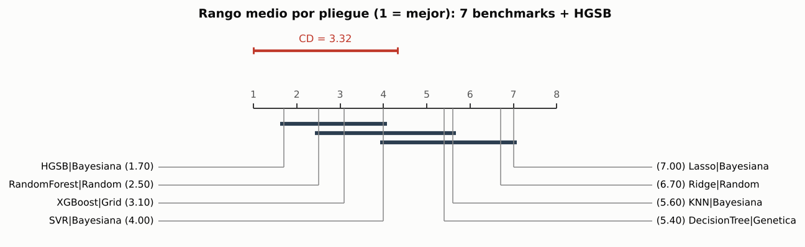
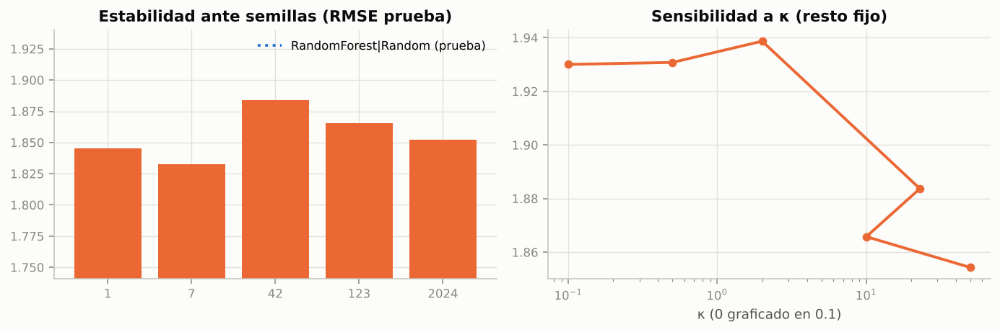

6. Validación estadística del modelo original#
Pregunta (condición R3): ¿el HGSB tiene un error menor que el de los benchmarks, con una diferencia estadísticamente significativa y no trivial?
6.1 Protocolo común#
Mismas particiones y semilla que los 28 benchmarks: hold-out por activo (139 activos), 10 pliegues externos y 3 internos GroupKFold, semilla 42. El HGSB pasó por la misma búsqueda bayesiana con el mismo presupuesto de 30 evaluaciones (pareado estricto).
Comparador principal: la mejor combinación benchmark por RMSE medio del bucle externo. La definición de superioridad (guía 6.1) exige además superar la mejor combinación de cada uno de los 7 modelos.
Tipo de datos: panel activo-año, de corte transversal entre activos. Por eso las pruebas principales son las de la columna de corte transversal de la guía (Tabla 3): Wilcoxon por pliegue, t corregida de Nadeau-Bengio, permutación pareada y bootstrap pareado BCa. Las dos últimas se hacen a nivel de activo (139 unidades independientes), porque las filas de un mismo activo están correlacionadas (ρ = 0.75 en los residuos).
Procedimiento global: Model Confidence Set [Hansen et al., 2011] con el HGSB dentro del universo de 29 modelos, con bootstrap estacionario sobre las filas ordenadas por activo y año. Así los bloques respetan la dependencia dentro del activo. Se complementa con Friedman + Nemenyi [Demšar, 2006] sobre los 10 pliegues.
Comparaciones múltiples: Holm sobre las cuatro pruebas dirigidas; se reportan el p crudo y el ajustado.
Tamaño del efecto: δ de Cliff (umbral de no despreciable |δ| ≥ 0.147 [Romano et al., 2006]) y d de Cohen pareado.
import sys, json, warnings
sys.path.insert(0, "..")
warnings.filterwarnings("ignore")
import numpy as np
import pandas as pd
import matplotlib.pyplot as plt
from scipy import stats
from src import config as C
from src.stats_tests import cd_diagram
from src.viz import set_style, SERIES
set_style()
pd.set_option("display.float_format", lambda v: f"{v:,.4f}")
ORIG = C.RESULTS_DIR / "original"
F = pd.read_csv(ORIG / "folds.csv", index_col=0)
fr = json.load(open(ORIG / "friedman.json"))
verdict = json.load(open(ORIG / "verdict.json", encoding="utf-8"))
best = fr["best_benchmark"]
6.2 Tabla resumen#
lb = pd.read_csv(C.ROOT / "artifacts" / "leaderboard.csv")
summary = pd.DataFrame({
"Modelo": lb.label, "Optimizador": lb.method,
"RMSE externo": [f"{a:.3f} ± {b:.3f}" for a, b in zip(lb.outer_rmse_mean, lb.outer_rmse_std)],
"RMSE prueba": lb.test_rmse, "R² prueba": lb.test_r2,
"Cobertura IC 90 %": lb.coverage_test, "Inferencia (ms/fila)": lb.infer_ms_per_row,
}).sort_values("RMSE prueba")
master = pd.read_csv(C.RESULTS_DIR / "master_table.csv")
times = master[master.scenario == "A_estructural"].set_index(["model", "method"])["fit_time_s"]
summary
| Modelo | Optimizador | RMSE externo | RMSE prueba | R² prueba | Cobertura IC 90 % | Inferencia (ms/fila) | |
|---|---|---|---|---|---|---|---|
| 5 | XGBoost | Grid | 2.057 ± 0.600 | 1.6481 | 0.9196 | 0.9359 | 0.0498 |
| 4 | Random Forest | Random | 2.008 ± 0.549 | 1.7171 | 0.9127 | 0.9319 | 0.0483 |
| 7 | HGSB · modelo original | Bayesiana | 1.927 ± 0.579 | 1.8837 | 0.8949 | 0.9105 | 0.0886 |
| 3 | Árbol de decisión | Genetica | 2.448 ± 0.886 | 1.9326 | 0.8894 | 0.9426 | 0.0109 |
| 0 | KNN | Bayesiana | 2.613 ± 0.659 | 2.1281 | 0.8659 | 0.9292 | 0.1833 |
| 6 | SVR (RBF) | Bayesiana | 2.187 ± 0.529 | 2.1597 | 0.8619 | 0.9266 | 0.6049 |
| 2 | Lasso | Bayesiana | 2.705 ± 0.575 | 2.6402 | 0.7936 | 0.9266 | 0.0099 |
| 1 | Ridge | Random | 2.683 ± 0.553 | 2.6703 | 0.7888 | 0.9226 | 0.0098 |
6.3 Supuestos#
Wilcoxon: supone diferencias pareadas simétricas alrededor de la mediana; se revisa con la asimetría de \(\Delta\)RMSE.
t de Nadeau-Bengio [Nadeau and Bengio, 2003]: supone normalidad aproximada de \(\Delta\)RMSE (Shapiro-Wilk) y corrige la varianza por el solapamiento de los conjuntos de entrenamiento: \(\hat\sigma^2_{\mathrm{corr}} = \big(\tfrac1k + \tfrac{n_{\mathrm{test}}}{n_{\mathrm{train}}}\big)\hat\sigma^2\).
Permutación y bootstrap por activo: suponen activos intercambiables e independientes entre sí; la dependencia dentro del activo se respeta al tomarlo como unidad.
MCS: supone estacionariedad de las diferencias de pérdida; el bootstrap estacionario por bloques [Politis and Romano, 1994] respeta la dependencia en el orden activo-año.
d = F["HGSB|Bayesiana"] - F[best]
print(f"ΔRMSE por pliegue (HGSB − {best}):", np.round(d.values, 3))
print(f"media {d.mean():+.4f} · mediana {d.median():+.4f} · asimetría {stats.skew(d):.2f}")
print(f"Shapiro-Wilk p = {stats.shapiro(d).pvalue:.3f} (H0: normalidad)")
print(f"Pliegues en que el HGSB es mejor: {(d < 0).sum()}/10")
ΔRMSE por pliegue (HGSB − RandomForest|Random): [-0.256 -0.066 -0.272 -0.076 -0.023 -0.091 0.072 0.13 0.234 -0.458]
media -0.0807 · mediana -0.0713 · asimetría -0.29
Shapiro-Wilk p = 0.922 (H0: normalidad)
Pliegues en que el HGSB es mejor: 7/10
6.4 Pruebas de hipótesis#
tests = pd.read_csv(ORIG / "tests.csv")
tests
| Prueba | H0 | Supuestos | Estadístico | p crudo | p ajustado (Holm) | Tamaño del efecto | Conclusión | |
|---|---|---|---|---|---|---|---|---|
| 0 | Wilcoxon (pliegues) | Mediana de ΔRMSE por pliegue = 0 | Pares por pliegue; diferencias simétricas | W = 16.0 | 0.1377 | 0.5508 | δ de Cliff = -0.140 (despreciable) | No rechaza H0 |
| 1 | t corregida de Nadeau-Bengio | E[ΔRMSE] = 0 | Normalidad aprox. de ΔRMSE; corrección por sol... | t = -0.855 | 0.2074 | 0.6221 | d de Cohen = -0.393 (pequeño) | No rechaza H0 |
| 2 | Permutación pareada por activo (prueba) | E[L_HGSB − L_bench] = 0 por activo | Activos independientes; intercambiabilidad del... | Δ pérdida = 0.603 | 0.5745 | 1.0000 | d de Cohen (activos) = 0.055 (despreciable) | No rechaza H0 |
| 3 | Bootstrap BCa por activo (prueba) | RMSE_HGSB − RMSE_bench = 0 | Remuestreo de activos (conglomerados) | ΔRMSE = 0.167 [-0.088, 0.809] | 0.7818 | 1.0000 | ΔRMSE = +0.167 USD/Bbl | No rechaza H0 |
| 4 | MCS (global, α = 0.10) | El benchmark pertenece al conjunto de los mejores | Bootstrap estacionario (orden activo-año) | p_MCS bench = 0.672; p_MCS HGSB = 0.609 | 0.6725 | — | — | No rechaza H0 |
6.5 Procedimiento global: Friedman, Nemenyi y MCS#
f8 = fr["friedman_8"]
print(f"Friedman (7 mejores combinaciones + HGSB): χ² = {f8['chi2']:.2f}, p = {f8['p_value']:.2e}, "
f"W de Kendall = {f8['kendall_W']:.3f}; CD de Nemenyi = {fr['cd_8']:.2f}")
ranks = pd.Series(fr["ranks_8"]).sort_values()
fig, ax = plt.subplots(figsize=(9, 3.2))
cd_diagram(ranks, fr["cd_8"], ax=ax, title="Rango medio por pliegue (1 = mejor): 7 benchmarks + HGSB")
plt.show()
Friedman (7 mejores combinaciones + HGSB): χ² = 45.27, p = 1.21e-07, W de Kendall = 0.647; CD de Nemenyi = 3.32

mcs = pd.read_csv(ORIG / "mcs.csv")
mcs[["model", "RMSE", "p_mcs", "in_mcs", "elim_order"]].head(15)
| model | RMSE | p_mcs | in_mcs | elim_order | |
|---|---|---|---|---|---|
| 0 | XGBoost|Random | 1.5958 | 1.0000 | True | 29 |
| 1 | XGBoost|Bayesiana | 1.6235 | 0.7755 | True | 28 |
| 2 | XGBoost|Grid | 1.6481 | 0.7755 | True | 27 |
| 3 | RandomForest|Bayesiana | 1.6544 | 0.7755 | True | 26 |
| 4 | RandomForest|Genetica | 1.6993 | 0.6725 | True | 25 |
| 5 | XGBoost|Genetica | 1.7097 | 0.6725 | True | 24 |
| 6 | RandomForest|Random | 1.7171 | 0.6725 | True | 23 |
| 7 | RandomForest|Grid | 1.7212 | 0.6085 | True | 22 |
| 8 | HGSB|Bayesiana | 1.8837 | 0.6085 | True | 21 |
| 9 | DecisionTree|Random | 1.9208 | 0.5235 | True | 20 |
| 10 | DecisionTree|Genetica | 1.9326 | 0.4215 | True | 19 |
| 11 | DecisionTree|Grid | 1.9611 | 0.3030 | True | 18 |
| 12 | DecisionTree|Bayesiana | 1.9874 | 0.1820 | True | 17 |
| 13 | KNN|Random | 2.0742 | 0.1225 | True | 15 |
| 14 | SVR|Grid | 2.0932 | 0.1820 | True | 16 |
6.6 Intervalos de confianza y robustez#
seeds = pd.read_csv(ORIG / "seeds.csv")
kap = pd.read_csv(ORIG / "kappa.csv")
fig, axes = plt.subplots(1, 2, figsize=(10, 3.4))
axes[0].bar(seeds.seed.astype(str), seeds.test_rmse, color=SERIES[1])
axes[0].axhline(verdict["bench_test_rmse"], ls=":", color=SERIES[0], label=f"{best} (prueba)")
axes[0].set_ylim(seeds.test_rmse.min() * 0.95, max(seeds.test_rmse.max(), verdict["bench_test_rmse"]) * 1.03)
axes[0].set_title("Estabilidad ante semillas (RMSE prueba)"); axes[0].legend()
axes[1].semilogx(kap.kappa.replace(0, 0.1), kap.test_rmse, "o-", color=SERIES[1])
axes[1].set_xlabel("κ (0 graficado en 0.1)"); axes[1].set_title("Sensibilidad a κ (resto fijo)")
fig.tight_layout(); plt.show()
print(f"Semillas: {seeds.test_rmse.mean():.3f} ± {seeds.test_rmse.std(ddof=1):.3f}")
kap
Semillas: 1.856 ± 0.020

| kappa | test_rmse | |
|---|---|---|
| 0 | 0.0000 | 1.9300 |
| 1 | 0.5000 | 1.9308 |
| 2 | 2.0000 | 1.9387 |
| 3 | 22.8713 | 1.8837 |
| 4 | 10.0000 | 1.8658 |
| 5 | 50.0000 | 1.8543 |
La sensibilidad a κ es descriptiva (se mide en el hold-out con los demás hiperparámetros fijos): no se usó para elegir κ, que salió de la búsqueda anidada.
6.7 Veredicto#
print(verdict["text"])
HGSB: RMSE externo 1.927 ± 0.579 frente a 2.008 ± 0.549 del mejor benchmark (RandomForest|Random); en prueba 1.884 vs 1.717. 0 de 5 pruebas rechazan H0 (Holm / MCS); δ de Cliff = -0.140. No cumple R3: la diferencia no es estadísticamente significativa con las correcciones exigidas.
Discusión#
La superioridad se juzga con las tres condiciones de la guía (6.1): (1) menor RMSE medio externo que la mejor combinación benchmark y que la mejor de cada modelo; (2) al menos tres pruebas que rechacen H0 con p ajustado < 0.05 (< 0.10 para el MCS); y (3) |δ de Cliff| ≥ 0.147. Si alguna falla, el resultado se reporta como no superior. Las causas probables se discuten con la evidencia de este capítulo: poca potencia con 10 pliegues, un efecto propio del activo que ningún modelo observa (correlación de errores ≥ 0.57 entre todos los modelos) y la alta variación entre pliegues (d.e. ≈ 0.55 USD/Bbl, del mismo orden que las diferencias entre modelos).